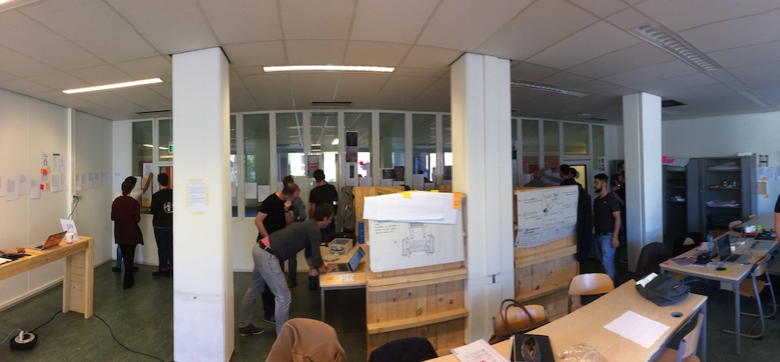
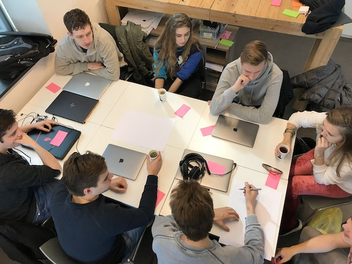
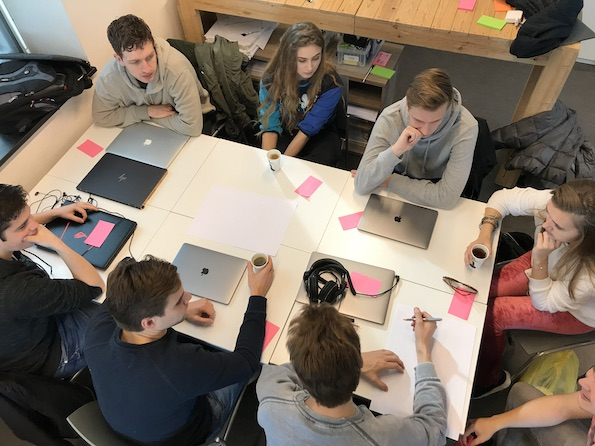

In het studiomodel werken studenten onder begeleiding van coaches en vakdocenten aan praktijkgerichte opdrachten.
De opleiding
In de opleiding Frontend Design & Development leer je interactieve toepassingen maken voor het web. Met HTML, CSS en Javascript maak je echte opdrachten voor echte opdrachtgevers.
Alles wat je gaat doen doe je met code: Met code los je een parkeerprobleem op voor de Gemeente Amsterdam, met code ontwerp je voor de Openbare Bibliotheek een betere zoekfunctie, en met code help je de zorg te verbeteren samen met verpleegkundigen van het Academisch Medisch Centrum ...
Een frontend designer & developer richt zich op web-design, visual interface design, user experience design en frontend development:
- Je leert over vormgeving, layout en typografie voor websites.
- Je leert hoe je UX principes kan toepassen voor een goede interactie.
- Je codeert in HTML, CSS en Javascript, voor de browser en op de server.


 
